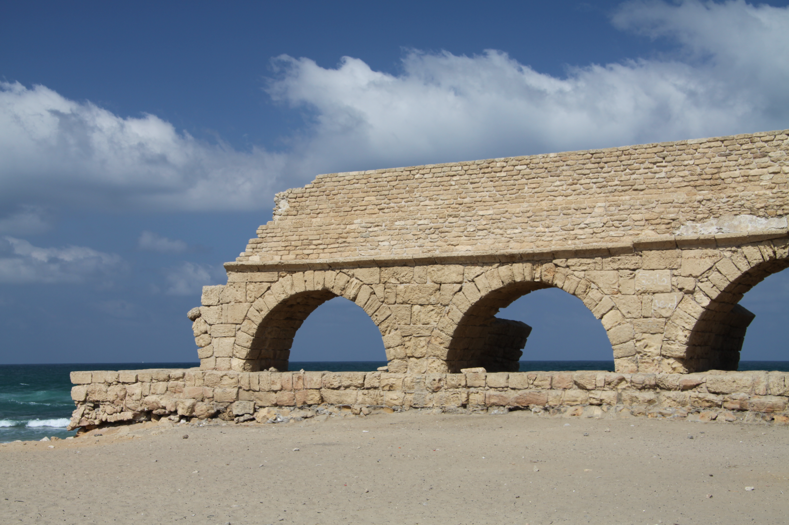

Caesarea Maritima

- Find Name
- Caesarea Maritima
- Description
- Herod the Great's artificial harbour city, built c. 22-10/9 BC on the site of Straton's Tower and named for Caesar Augustus. Its harbour, Sebastos, was laid into open water with hydraulic concrete made from volcanic ash shipped from Italy, since this coast has no natural shelter. The excavated city includes a 4,000-seat theatre, a hippodrome, a palace on a promontory with a rock-cut pool, a temple platform to Augustus, and a double aqueduct bringing water from springs at the foot of Mount Carmel. The harbour breakwaters now lie more than five metres underwater. This entry covers the city and its harbour complex only; the Pilate Stone found reused in the theatre has its own entry.
- Historical Period
- Roman–Byzantine
- Evidence Class
- Contextual
- Interpretations
- Scholars agree on the city's identity and Herodian harbour engineering; debate concerns details, such as the dating of the aqueduct's second channel (Herodian versus Hadrianic/Flavian) and the date of the harbour's failure (earthquake and/or tsunami in the 1st-2nd centuries AD, unusable by the 6th century). The Pilate Stone is not re-argued here; it has its own entry.
- Alternative Names
- Caesarea Palaestina; Sebastos Harbour City
- Related Places
- Related Books
- Related Events
- Related People
- Scripture Illuminated
- Biblical Significance
- Caesarea is the Roman capital of Judaea in the Acts story: the place where the gospel first crossed to a Gentile household, where Paul was held and heard before Festus and Agrippa, and from which he sailed toward Rome. Its theatre, harbour vaults and aqueduct are the stage furniture of Acts 10, 21, 23 and 25 — imperial power made concrete, and the gospel moving through it anyway.
- Artifact Date
- c. 22 BC - AD 640 (Herodian city; later phases to the Arab conquest)
- Current Location
- In situ, Caesarea National Park, Israel
- Date Discovered
- 1950s-1960s (large-scale excavations; work continues)
- Discovery Location
- Caesarea, Mediterranean coast, Israel
- Timeline Era
- Early Church
Awaiting Review Not yet checked against scholarly sources. Treat its claims as provisional until this entry is reviewed. About verification
Last reviewed: not yet reviewed